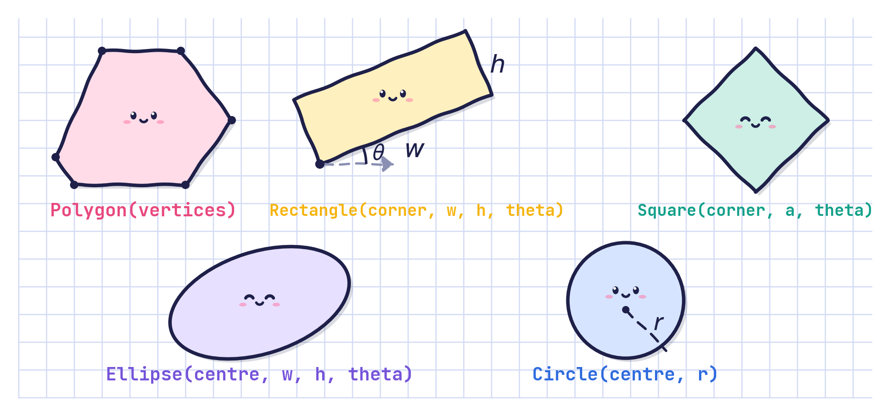
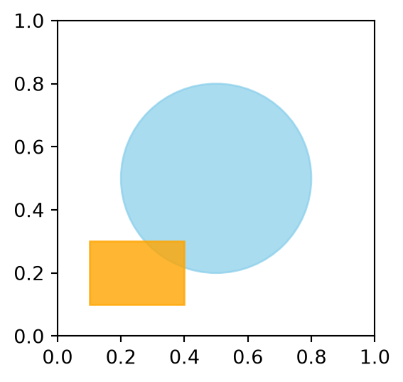
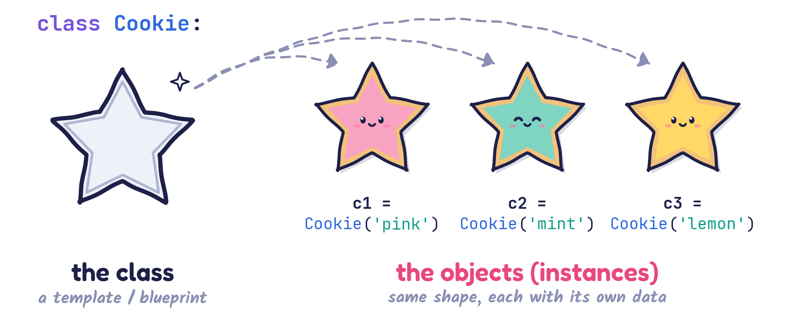
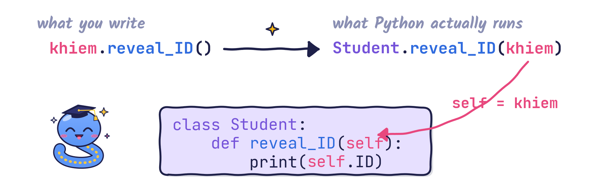
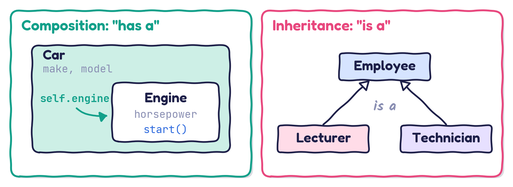
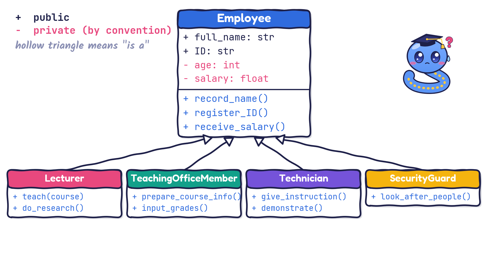
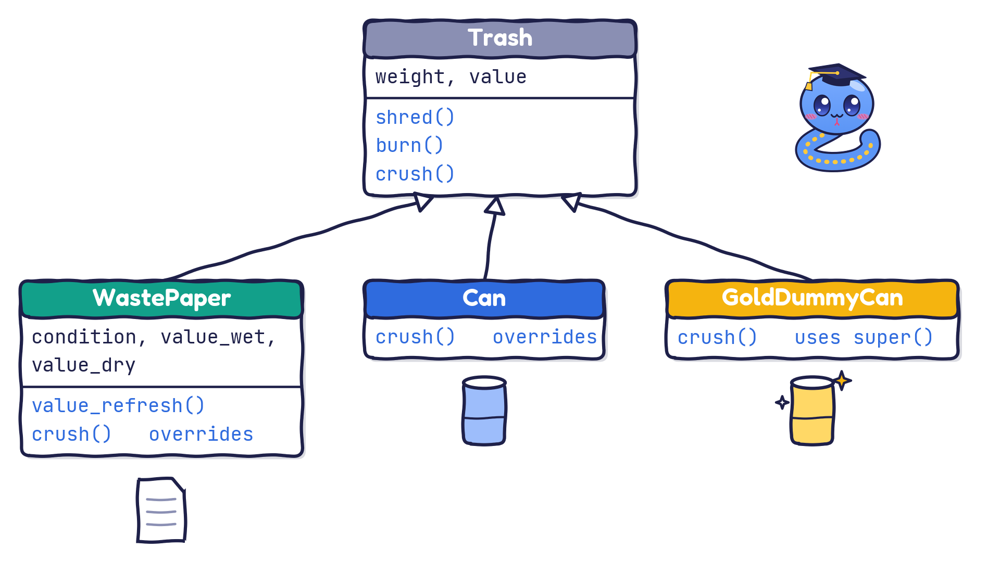

'Mechanical--Engineering--Skills--3'Implementing OOP in Python
Object-oriented programming (OOP) is a programming paradigm that organises software around objects, which are instances of classes. Objects bundle data (attributes) with behaviour (methods), which makes it easier to model real-world entities in code.

Circle and Square both provide draw().Procedural programming
| Pros | Cons |
|---|---|
| Simple and easy to learn for small programs | Harder to maintain as the code grows (“spaghetti code”) |
| Good for linear, algorithmic tasks | Poor modelling of real-world entities |
| Less overhead than OOP for small projects | Limited reuse; copy-and-paste duplication is common |
| Changing a data structure often means changing many functions |
Object-oriented programming
| Pros | Cons |
|---|---|
| Encapsulation: data and methods together, improving modularity | More complex for beginners |
| Reusability: inheritance and polymorphism reduce duplication | Slightly more overhead (memory and design time) |
| Maintainability: easier to update and extend large systems | Can lead to over-engineering for simple tasks |
| Real-world modelling: classes map naturally to entities |
Key difference. Procedural code focuses on functions acting on data. OOP focuses on objects that hold both data and behaviour.
Strings and lists are objects with their own methods and operators:
'Mechanical--Engineering--Skills--3'Figure and Axes objects:
Many Python libraries are written in the OOP paradigm. NumPy arrays are objects:
Linear regression models are objects too:
from sklearn.linear_model import LinearRegression
import numpy as np
model = LinearRegression() # create a LinearRegression object
X = np.array([[1], [2], [3], [4], [5]]) # features
y = np.array([2, 4, 6, 8, 10]) # targets
model.fit(X, y) # fit the model to the data
predictions = model.predict(np.array([[1.5], [2.5]]))
print(type(model))
print(type(predictions))
print(predictions)<class 'sklearn.linear_model._base.LinearRegression'>
<class 'numpy.ndarray'>
[3. 5.]Circle and Rectangle from matplotlib.patches:

Last but not least, you will meet OOP all the time in advanced courses:

A class is defined by the keyword
classfollowed by the name of the class. Note the colon:and the indentation.
The statements inside a class can
A template for a Circle:
class Circle: # <- class name
def __init__(self, center_outside, radius_outside): # constructor
self.center = center_outside # <- data, local to each object
self.radius = radius_outside # <- data, local to each object
def draw(self): # <- method
print("Drawing is done") # the plotting would happen here
def show_data(self): # <- method
print(f"Circle: center={self.center}, radius={self.radius}")A Circle can now be created and used:
Circle: center=(1, 1), radius=0.5
Drawing is doneWhat has just happened?
c = Circle((1, 1), 0.5) runs, Python creates a new Circle object and calls its __init__() method to fill in the data.c.c now refers to an object of type Circle.__init__(self, ...) is the constructor of the class Circle.
How to use it:
value_outside is just a parameter name.self.value is data stored in the object self.value_outside cannot be confused with self.value, even if we rename it to value.self is explained shortly.__init__() for the class Circle using the recommended practice?A simple interpretation of say_hello():
Hello there!
Hello there!
TypeError: SimpleClass.say_hello() missing 1 required positional argument: 'self'self variableCreate an object:
Inside the class, no object exists yet:
selfstands for “whichever object this method is called on”.
self gets filled in
self is an ordinary first parameter; Python passes the object for you.__init__(self, ID) is just a method too.self: questionsself: solutionsself is just a nameRecall that in
(1, 2, 3) {'one': 1, 'two': 2, 'three': 3}args and kwargs could have any other names:
self is just a nameIn the same way, self is simply the first parameter of every method in a class, and it could have another name:
42424242 is studying.By convention, always use
self, please!
Objects of more complicated concepts need several inputs to be created:
What do print(a), print(b) and print(c) give us?
How do we show the complex number in a human-readable form?
display() methodHow do we use this method?
We can write docstrings for a class and for its methods:
class Car:
"""Model a car."""
def __init__(self, make, model):
"""The constructor receives the manufacturer and model of the car."""
self.make = make
self.model = model
self.tank_cap = 60 # 60-litre tank
self.tank = 0 # the tank starts empty
def fill_up(self):
"""Fill the tank to full."""
self.tank = self.tank_cap
print("Fill-up done: full!")
my_car = Car("Nissan", "Micra")
my_car.fill_up()
print(my_car.tank)Fill-up done: full!
60class Car:
number_of_cars = 0 # class variable
def __init__(self, make, model):
"""The constructor receives the manufacturer and model of the car."""
Car.number_of_cars += 1 # update the class variable
self.make = make
self.model = model
self.tank_cap = 60
self.tank = 0
def fill_up(self):
self.tank = self.tank_cap
@classmethod
def how_many(cls):
# By convention: 'self' for the object, 'cls' for the class.
print(f"Number of cars = {cls.number_of_cars}")print(f"Number of cars (class variable) = {Car.number_of_cars}")
my_car = Car("Nissan", "Micra")
print(f"Number of cars = {Car.number_of_cars}")
your_car = Car("Mercedes", "A160")
print(f"Number of cars = {Car.number_of_cars}")
his_car = Car("Mercedes", "A140")
print(f"Number of cars = {Car.number_of_cars}")
print("Finally, we can also ask: ", end="")
Car.how_many()Number of cars (class variable) = 0
Number of cars = 1
Number of cars = 2
Number of cars = 3
Finally, we can also ask: Number of cars = 3@classmethodA class method can create objects for us:
We touch on composition briefly and then focus on inheritance.

Objects can contain other objects as attributes:
class Engine:
def __init__(self, horsepower):
self.horsepower = horsepower
def start(self):
print(f"Engine with {self.horsepower} HP is starting...")
class Car:
def __init__(self, make, model, engine):
self.make = make
self.model = model
self.engine = engine # composition: a Car HAS an Engine
def start(self):
print(f"Starting car: {self.make} {self.model}")
self.engine.start() # the car delegates to its engineStarting car: Toyota Supra
Engine with 300 HP is starting...The car has an engine: calling my_car.start() also starts my_car.engine.
Recall: inheritance arranges classes in a hierarchy that represents an is-a-type-of relationship.
Let’s sketch this on the board (press B for the whiteboard).
Employee might define the attributes full_name, age, salary and ID, and the methods record_name(), register_ID() and receive_salary().Lecturer, TeachingOfficeMember, Technician and SecurityGuard can all inherit from Employee. They then get every attribute and method defined in Employee.Principal benefits
- Inheritance allows easy reuse of procedures, functions and data definitions.
- New classes can extend existing classes.
This mirrors real-world relationships: we model objects that people recognise from real life.

Suppose that class A is a type of class B. We say:
A inherits from class BA is derived from class BTerminology
A: derived class / subclass / child classB: base class / superclass / parent classThe names explain themselves through the parent–child relationship: the child (subclass) inherits from the parent (superclass).
Remark
- The name
BaseClassNamemust be defined before the derived class is defined.- In other words, Python must know the parent before it can create the child.
Multiple inheritance: a class can be derived from several classes. We discuss this later.
But:
Later, down the road, we may want to add

Trashclass Trash:
def __init__(self, weight, value):
"""Initialise a Trash instance."""
self.weight = weight
self.value = value
print("Trash constructor: Trash({0}, {1})".format(self.weight, self.value))
def shred(self):
print("In Trash: Shred me please!")
def burn(self):
print("In Trash: Burn me please!")WastePaperclass WastePaper(Trash):
def __init__(self, weight, value, condition, value_wet, value_dry):
super().__init__(weight, value) # run the parent's constructor first
self.condition = condition
self.value_wet = value_wet
self.value_dry = value_dry
print("WastePaper constructor: WastePaper({0}, {1}, {2}, {3}, {4})".format(
self.weight, self.value, self.condition, self.value_wet, self.value_dry))
def value_refresh(self):
self.value_wet = 0
self.value_dry = 0Canmy_trash = Trash(0.1, 1); print(50 * "-")
# WastePaper.__init__ calls Trash.__init__ first, then does its own work
my_waste_paper = WastePaper(0.2, 1, "new", 0.8, 0.2)
print("my_waste_paper.weight =", my_waste_paper.weight)
print("my_waste_paper.value =", my_waste_paper.value)
my_waste_paper.shred(); print(50 * "-") # inherited from Trash
my_can = Can(0.2, 2.0) # Trash.__init__ runs inside Can.__init__
my_can.crush()Trash constructor: Trash(0.1, 1)
--------------------------------------------------
Trash constructor: Trash(0.2, 1)
WastePaper constructor: WastePaper(0.2, 1, new, 0.8, 0.2)
my_waste_paper.weight = 0.2
my_waste_paper.value = 1
In Trash: Shred me please!
--------------------------------------------------
Trash constructor: Trash(0.2, 2.0)
Can constructor: Can(0.2, 2.0)
In Can: Crush me please!One of the most important and exciting features of inheritance: subclasses can override methods defined by their superclass (base class).
class Trash:
def __init__(self, weight, value):
"""Initialise a Trash instance."""
self.weight = weight
self.value = value
print("Trash constructor: Trash({0}, {1})".format(self.weight, self.value))
def shred(self):
print("In Trash: Shred me please!")
def burn(self):
print("In Trash: Burn me please!")
def crush(self): # the subclasses will override this method
print("In Trash: Crush me please!")WastePaperclass WastePaper(Trash):
def __init__(self, weight, value, condition, value_wet, value_dry):
super().__init__(weight, value)
self.condition = condition
self.value_wet = value_wet
self.value_dry = value_dry
print("WastePaper constructor: WastePaper({0}, {1}, {2}, {3}, {4})".format(
self.weight, self.value, self.condition, self.value_wet, self.value_dry))
def value_refresh(self):
self.value_wet = 0
self.value_dry = 0
def crush(self): # overrides Trash.crush
print("In WastePaper: Crush me please!")Can and GoldDummyCanclass Can(Trash):
def __init__(self, weight, value):
super().__init__(weight, value)
print("Can constructor: Can({0}, {1})".format(weight, value))
def crush(self): # overrides Trash.crush
print("In Can: Crush me please!")
class GoldDummyCan(Trash):
def __init__(self, weight, value):
super().__init__(weight, value)
print("GoldDummyCan constructor: GoldDummyCan({0}, {1}) -- I am rich too!".format(
weight, value))
def crush(self):
super().crush() # first run the parent's version...
print("In GoldDummyCan: Crush me please!") # ...then add our ownIgnoring the constructor messages, which crush message(s) does each call print?
Trash constructor: Trash(0.1, 1)
In Trash: Crush me please!
Trash constructor: Trash(0.2, 2.0)
Can constructor: Can(0.2, 2.0)
In Can: Crush me please!
Trash constructor: Trash(0.02, 0.2)
WastePaper constructor: WastePaper(0.02, 0.2, old, 0.05, 0.15)
In WastePaper: Crush me please!
Trash constructor: Trash(0.05, 200)
GoldDummyCan constructor: GoldDummyCan(0.05, 200) -- I am rich too!
In Trash: Crush me please!
In GoldDummyCan: Crush me please!The same call, item.crush(), does the right thing for each type of object:
Trash: In Trash: Crush me please!
Can: In Can: Crush me please!
WastePaper: In WastePaper: Crush me please!
GoldDummyCan: In Trash: Crush me please!
In GoldDummyCan: Crush me please!True False False. A Can is a Trash; a plain Trash is not a Can; and GoldDummyCan inherits from Trash, not from Can, despite its name.
__init__ is the constructor; self is the object the method is working on.@classmethod belong to the class itself, not to one object.super() reaches the parent’s version.